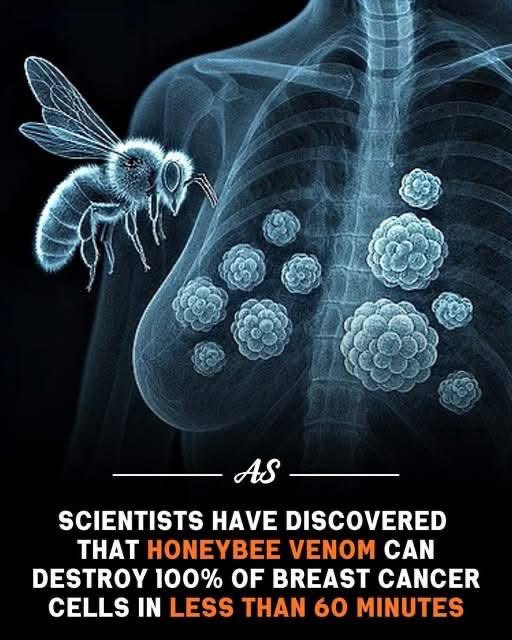
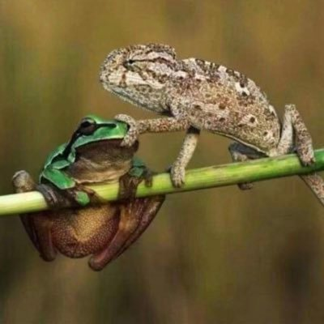

阿司匹林片也是阿片
@AspiLin0
@YujunWale

阿司匹林片也是阿片
@AspiLin0
Talk is cheap. Show me the paper
培养皿环境100%算不上什么惊人的发现，只能说因为作用机理比较特别可能在经过漫长临床测验后会被加入鸡尾酒疗法中，不会成为什么神药。 https://t.co/cjW7T0Yst3

话梅女人
@YujunWale
澳大利亚科学家发现，蜜蜂毒液可在不到60分钟的时间内摧毁100%的恶性乳腺癌细胞。这种毒液中含有一种名为蜂毒肽的物质，它通过在癌细胞膜上打孔来靶向癌细胞，使其快速死亡。
更有趣的是，这种方法对健康细胞无害。看来，我们苦苦追寻的良方可能一直在我们身边。 https://t.co/Hu1NRCDOS0